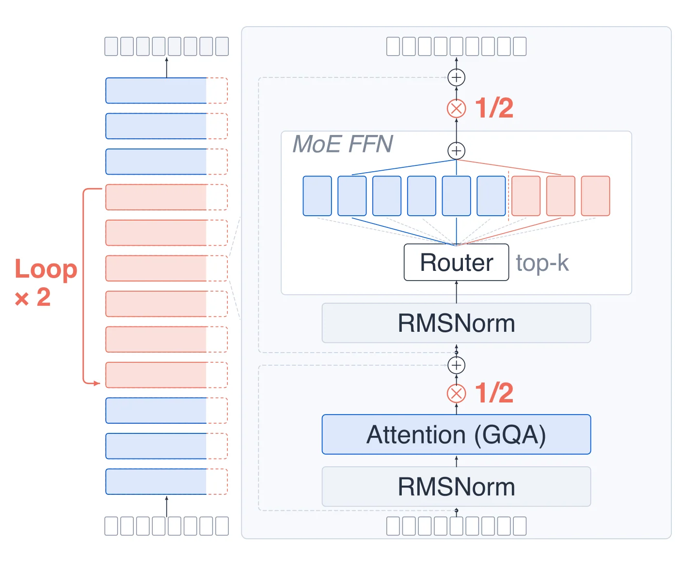
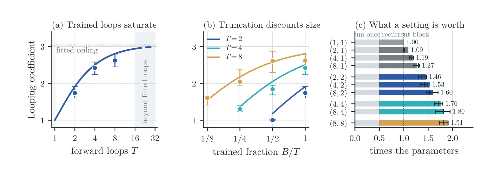
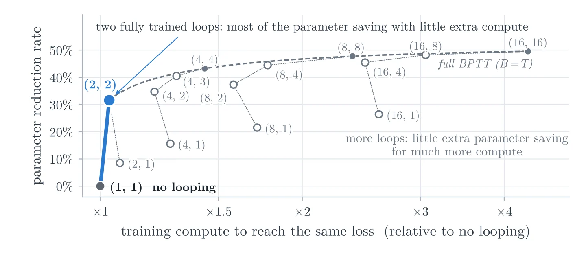
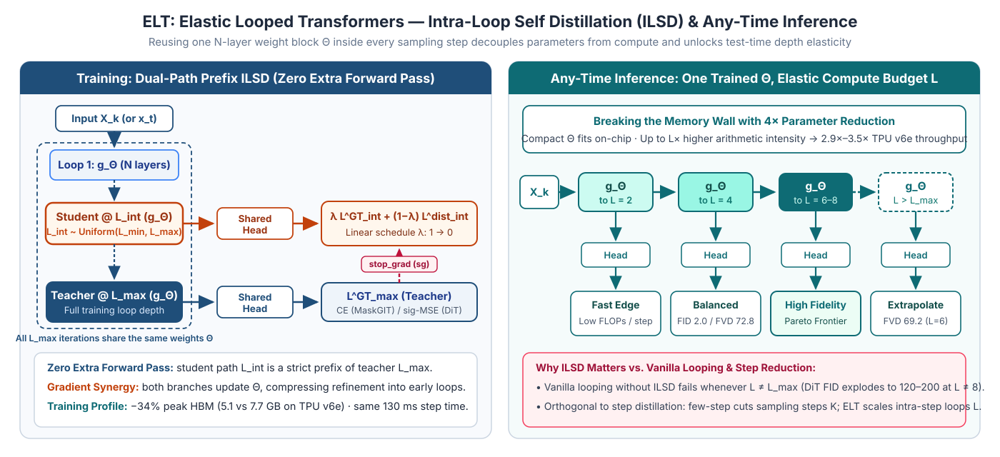
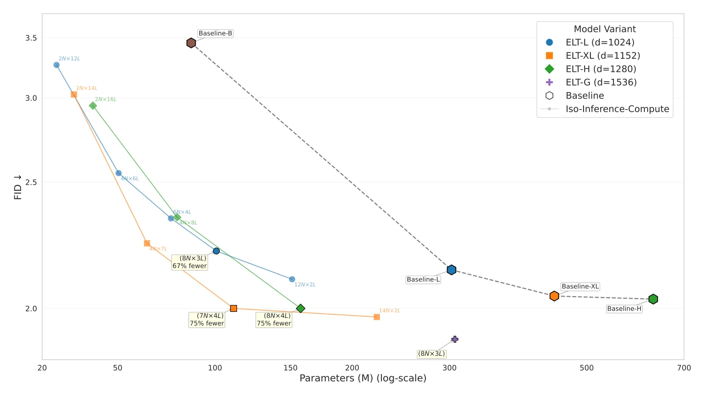
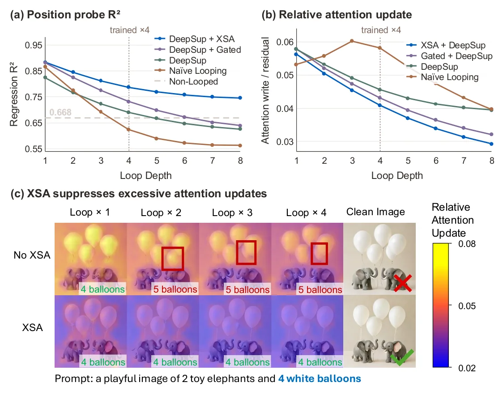
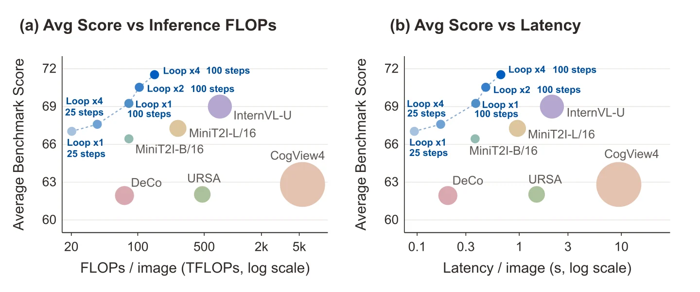

Looped Transformer 通过重复执行同一段共享层，把“执行深度”与“静态参数量”拆开[6][7]。过去很多评测只在相同静态参数量下做对比，无形中让循环模型多花了成倍的 FLOPs 和 KV Cache，很难分辨收益究竟来自结构本身还是额外算力。
2026 年的五项工作分别在语言模型与视觉生成上回答了这些问题：
- 语言模型侧：SMELT[1] 在单 token FLOPs、总参数量和 KV Cache 三项预算同时对齐时证明 MoE 循环仍有收益；Truncate or Not?[2] 系统算清了有限算力下前向与反向循环次数的账；Thinking Machines Lab 开源的 Inkling 2 Mini[3] 与 Goodfire 的可解释性分析[4] 展示了双路 Attention Residuals（AttnRes）与内部路由电路。
- 视觉生成侧：在扩散模型（DiT / MMDiT）与 Masked Generative 模型（MaskGIT / MAGVIT）中，ELT[9] 借助前缀自蒸馏让每个采样步支持任意深度的 Any-Time 弹性推理；Looped-DiT[10] 则用 Deep Supervision 与 Self-Modulating Attention（SMA / XSA）解决了文生图循环中的空间退化问题。
五种循环架构一览
从标准 Transformer 出发
理解各种 Looped Transformer 最直接的方式，是先看回标准 Pre-Norm Transformer 单层的计算流。在第 $\ell$ 层，Self-Attention 负责沿 token 序列维度交换上下文信息，FFN（或稀疏 MoE）做逐 token 变换，两个子层的输出再以固定系数 $1$ 累加到同一条 Residual Stream $\mathbf{h}_\ell$ 上：
$$\begin{aligned} \mathbf{o}_{\text{attn}}^{(\ell)} &= \operatorname{SelfAttn}_\ell\big(\operatorname{RMSNorm}(\mathbf{h}_\ell)\big), & \mathbf{h}'_\ell &= \mathbf{h}_\ell + \mathbf{o}_{\text{attn}}^{(\ell)}, \\ \mathbf{o}_{\text{ffn}}^{(\ell)} &= \operatorname{FFN}_\ell\big(\operatorname{RMSNorm}(\mathbf{h}'_\ell)\big), & \mathbf{h}_{\ell+1} &= \mathbf{h}'_\ell + \mathbf{o}_{\text{ffn}}^{(\ell)}. \end{aligned}$$展开来看，$\mathbf{h}_\ell = \mathbf{h}_0 + \sum_{k<\ell}\big(\mathbf{o}_{\text{attn}}^{(k)} + \mathbf{o}_{\text{ffn}}^{(k)}\big)$ 默认把 Embedding 和之前所有层的写入等权叠加。如果只是把中间几层权重简单套回这个公式连续跑多遍，同一套权重反复写入同一条残差流很容易造成范数膨胀或特征覆盖，且中间轮次的梯度供给与表示对齐都会出问题。下文五项工作本质上都是在重写这套残差与跨轮更新方程：
- SMELT（缩放累加残差）：保留单条残差流，仅对循环区域内的每次子层写入乘以 $1/r$（两遍循环即 $1/2$），同时收窄宽度、增加 MoE 专家对齐预算： $$\mathbf{h}'_\ell = \mathbf{h}_\ell + \tfrac{1}{r}\,\mathbf{o}_{\text{attn}}^{(\ell)}, \qquad \mathbf{h}_{\ell+1} = \mathbf{h}'_\ell + \tfrac{1}{r}\,\mathbf{o}_{\text{MoE}}^{(\ell)}.$$
- Truncate or Not?（Prelude 重注入 + RMSNorm）：每轮循环前把初始 Prelude 状态 $\mathbf{s}_0$ 与上一轮输出 $\mathbf{s}_{t-1}$ 拼接投影后再进共享核心 $\mathcal{R}$，末尾加 RMSNorm 稳住尺度： $$\mathbf{s}_t = \operatorname{RMSNorm}\!\Big(\mathcal{R}\!\big(W_{\text{inj}}[\mathbf{s}_0;\,\mathbf{s}_{t-1}]\big)\Big).$$
- Inkling 2 Mini（Block AttnRes + Cross-Loop 门控）：放弃单条等权累加残差流，改为按 Block 维护各自清零的 Running Sum $\mathbf{v}_i$；每个子层先做沿深度维度的 Softmax 读取（Depth-wise Read），从第 2 轮起再叠加读取上一轮核心块的 Cross-Loop 门控消息（完整方程见下文 Inkling 2 Mini 一节）。
- ELT 与 Looped-DiT（步内视觉循环）：在每个扩散去噪或 Masked Generative 采样步内部嵌套循环。ELT 对 $N$ 层复合块连续应用 $L$ 遍，$F_{(N,L)}(\mathbf{x}) = g_\Theta^L(\mathbf{x})$，靠前缀自蒸馏对齐早期出口；Looped-DiT 将中间 MMDiT 块循环 $N$ 遍，$h^{(r)} = \mathcal{B}(h^{(r-1)})$，并用共享 Post-loop 做 Deep Supervision、在循环头内加入无参数正交投影 $G_{i,h}^{\text{xsa}} = I - \hat{v}_{i,h}\hat{v}_{i,h}^\top$ 抑制重复覆写。
整体来看，语言模型三条路线（图 1）均保留非共享首尾层、只循环中间核心块，分别对应等预算 MoE Scaling、$(T, B)$ 梯度截断与 Cross-Loop Attention 路由；视觉生成两条路线（图 14 与图 17）则把权重共享循环嵌进每一步采样或去噪内部，在压缩参数量的同时，提供了比单纯增加去噪步数更有效的推理算力分配方式。

| 架构方案 | 主干与循环跨度 | 状态耦合与监督策略 | 核心结论 |
|---|---|---|---|
| SMELT | 稀疏 MoE（GQA, top-8）；中间 50% 层循环 2 遍 | $1/2$ 缩放累加残差；完整 BPTT 训练至 215B tok | 等算力/参数/KV 下前沿省 6.8–18.0% 训练算力 |
| Truncate or Not? | 稠密 Huginn 式（58M–919M）；中间层循环 $T\in\{1..16\}$ | 每轮注入 $W_{\text{inj}}[s_0; s_{t-1}]$ + RMSNorm；扫描 $(T,B)$ | 同算力完整反传胜出；$(2,2)$ 少 27% 参数近持平 |
| Inkling 2 Mini | 24 层混合 MoE（8/128）；Block 2–3 循环 3 遍（48 层） | Depth-wise + Cross-Loop AttnRes（$\kappa\odot x + \gamma\odot m$）；NVFP4/MXFP8 | <100B 开源编码领先（DeepSWE 48.2%）；$d_{2027}$ 控跨轮 |
| ELT | MaskGIT / MAGVIT / DiT；单步内 $N$ 层核心块循环 $L$ 遍 | 前缀自蒸馏 ILSD（$\lambda: 1\to 0$）；Any-Time 弹性截断 | 4× 少参数（FID 2.0 / FVD 72.8）；TPU 吞吐 3.5×；DiT 收敛 2× |
| Looped-DiT | 像素空间 MMDiT（[6, 5, 6], 260M）；中 5 块循环 $\times 4$（32L） | Deep Supervision（Final + Mean）+ 无参数 XSA | 均值 71.5 优于 6.5× 大模型；循环优于单纯加去噪步数 |
SMELT：等算力 MoE 循环
三项预算对齐配方
论文 SMELT: Scaling Laws for Compute-Matched MoE Looped Transformers[1] 先处理了一个评测口径问题：在常规 12 层模型里把中间 6 层重复跑两遍（实算 18 层），静态参数没变，但单 token FLOPs 和 KV Cache 会直接涨一半。此前在稠密模型上做等 FLOPs（Iso-Depth）对比时，为了扣回算力必须砍掉独立参数，导致 $r$ 次循环只相当于 $r^{0.46}$ 份独立层的容量，最终输给不循环基线。SMELT（Sparse MoE Transformer, middle layers Loop Twice）借助稀疏 MoE 的参数–算力解耦把三项预算同时对齐：
- 对齐单 token FLOPs（误差 < 4%）：主动收窄隐层宽度 $H$ 来抵消多跑一遍中间层增加的计算。以 200M、等效稀疏度 $S\approx 95\%$ 档为例，$H$ 从 $1280$ 压到 $1056$，单 token 训练算力落在 $1.37\times 10^9$ 对基线 $1.33\times 10^9$（$+2.9\%$）。
- 补回非 embedding 总参数量（误差 < 1%）：变窄会缩水每个专家的参数，因此作者保持每层仍激活 top-8，但把每层专家总数从 $192$ 提到 $288$，总参数回到 $3.89\text{B}$ 对 $3.87\text{B}$（$+0.4\%$）。
- 对齐 KV Cache（误差 < 4%）并做残差缩放：通过减小 attention head 维度并提高 GQA 分组倍率把 KV 显存拉平；循环区域内的 Attention 和 MoE 残差更新均乘以 $1/r$（即 $1/2$），防止共享权重连续写入把残差流放大失稳。

在此对齐协议下，200M 上的三组消融确定了具体配置：
- 循环位置：只重复中间 50%（第 4–9 层）在 $S\approx 85\%$（$1.9257$ vs. $1.9322$）和 $S\approx 95\%$（$1.8517$ vs. $1.8601$）下均优于全栈循环。
- 深宽比：循环模型能承受更大的有效深宽比。物理 12 层 / 实算 18 层在各项指标上表现最好，得益于共享块能从多深度反向路径收集梯度。
- 循环次数：算力受限下 $2\times$ 胜过 $3\times$ 和 $4\times$（验证 loss $1.9257$ vs. $1.9385 / 1.9360$），因为再增加遍数会把隐层宽度压得太细。
Scaling Law 与下游收益
作者将该配方扩展到 $4 \times 4$ 实验网格，覆盖 100M / 200M / 600M / 1.6B 四个激活规模，配 $S=0\%$ 稠密参照及 $S\approx 85\%, 95\%, 97\%$ 三档稀疏度。整套实验的非 embedding 总参数量最高达 53.9B，经 WSD 稳定–退火至 215B tokens，SMELT 在全部 16 个网格点上的验证 loss 均低于基线。由 FLOPs 比值定义等效计算稀疏度 $N_{\text{act}}^{\text{eq}} = (F/F_0)N_0$、$S = 1 - N_{\text{act}}^{\text{eq}}/N$，分别拟合 Chinchilla 风格的 MoE Scaling Law：
$$\begin{aligned} \mathcal{L}(F, S, D) &= E + \frac{A\,(1 - S)^b}{F^a} + \frac{K}{D^c}, \\ \mathcal{L}^*(C, S) &= E + f(A,K,a,b,c,S)\,C^{-\gamma}, \qquad \gamma = \frac{ac}{a+c}. \end{aligned}$$在稀疏主战场（$S \approx 85\text{–}97\%$），SMELT 的容量指数（$a = 0.3892$ vs. $0.3703$）与数据指数（$c = 0.7011$ vs. $0.6594$）同步提高，前沿斜率 $\gamma$ 提升 $+5.5\%$（$0.250$ vs. $0.237$）。按同验证 loss 反查算力，SMELT 在 $10^{20}$ FLOPs 节省 6.8–10.0% 训练算力，到 $10^{21}$ FLOPs 扩大到 14.7–18.0%（外推 $10^{22}$ 约 $19.6\text{–}23.5\%$），且最优单参数 token 配比（~56–91 TPP）几乎不变。

除了验证 loss 下降，下游评测上的提升还超出了单纯由 loss 推算的幅度：
- 配对胜率与 Sigmoid 正残差：96 对配对评估中，SMELT 在 DCLM Completion 赢 96/96、DCLM Core 赢 83/96、高于随机基线的 MMLU 赢 29/30。用基线数据拟合「loss → 得分」Sigmoid 曲线后，SMELT 的正残差随规模单调放大，1.6B 时 Completion 多降 $12.3\text{ millinats}$、Core 高 $+1.2\text{ pp}$，其中符号推理以 $+1.9\text{ pp}$ 超过阅读理解。
- 结构化领域收益最突出：按验证域拆分算力节省，Code 达到 20.4%，其次是 Finance $16.8\%$ 与 Math/STEM $16.6\%$，Web 为 $14.8\%$。
- 长文本放大效应：在长样本（$512\text{–}4096$ vs. $32\text{–}256$ tokens）上增益放大至 $1.52\times$，而单纯加参数或加专家的对照组基本走平（$0.98\times$ 和 $0.88\times$）。
- 少样本 In-Context Learning（ICL）与 Dyck 匹配：给出示例后（$k\ge 1$），优势从 0-shot 的 $0.9\text{ pp}$ 拉大到 $1.9\text{ pp}$，32-shot Dyck 括号匹配达到 $29.8\%$ vs. $26.4\%$。

第二遍循环的内部机制
在 1M 验证集上探测共享中间层两次经过时的内部状态，可以看到第二遍并非简单复读，而是沿着第一遍建立的索引轨迹继续加工与提纯信息：

- 专家路由部分复用与重路由：高稀疏度 $S\approx 97\%$ 下，同一 token 两遍经过同一层 Router 时会复用 2–3 个核心专家（远高于均匀随机的 $8^2/504\approx 0.13$），其余 5–6 个槽位则切换为不同专家，在共享权重上走出差异化计算路径。
- 残差更新更强且方向一致：全部 16 个网格里，第二遍的 Attention 与 MoE 写入范数都放大至 1.2–3.5×（因为方向变化触发 RMSNorm 逐维缩放，送入子层的归一化输入本身已放大）。同时，同物理层跨两遍更新方向的余弦相似度达 $0.42\text{–}0.65$（均值 $0.56$，错层仅 $0.16$），说明是在原有方向上继续细化而非推翻覆盖。
- Q/K 保持索引、V 更新内容：第二遍重算后，$Q, K$ 跨遍余弦仍达 $0.89\text{–}0.93$，不低于输入 $X$ 的 $0.84\text{–}0.93$，离散 top-8 关注 token 重合度达 56–66%（同层异头对照仅 $28\text{–}34\%$）。相比之下，$V$ 相似度降到 $0.65\text{–}0.74$、输出 $O$ 进一步分化（$0.49\text{–}0.64$）——“看向哪里”基本保留，“从那里读什么”发生了实质更新。
- 压低 Attention Sink、转向示例答案：1.6B Dyck 任务中，关键 head 在 BOS 的 sink 权重从 60% 降到 2%，示例答案上的权重从 24% 升至 85%。在 1M 通用验证语料上，第二遍同样普遍削弱了各 head 的初始 token 聚集，甚至逆转了常规架构越往深层 sink 越重的趋势。

Truncate or Not?：梯度截断
Input Injection 与算力核算
论文 Truncate or Not? A Scaling Study of Looped Transformers with Truncated Backpropagation[2]（港大 MMLab 与耶鲁）在 FineWeb-Edu 上做了 592 组训练实验（$58\text{M}\text{–}919\text{M}$ 非 embedding 参数），专门回答训练循环模块时「该截断反传还是完整反传」。模型沿用 Huginn[7] 风格的 Prelude–Recurrent–Coda 三段式结构（例如 240M 为 $3/6/3$ 层，循环 4 遍共执行 $3+4\times 6+3=30$ 层）：
$$s_0 = \mathcal{P}(x),\qquad s_t = \Phi_\theta(s_{t-1}; s_0) = \operatorname{RMSNorm}\!\Big(\mathcal{R}\!\big(W_{\text{inj}}[s_0;\,s_{t-1}]\big)\Big),\qquad p = \mathcal{C}(s_T).$$![Truncate or Not? 原论文架构图：(a) (T, B) = (4, 2) 下在 s_{T-B} 截断梯度并将 s0 通过 Input Injection 传入每一轮循环的计算图；(b) 共享循环块内部含 W_inj[s0; s_{t-1}]、QK-norm Attention、ReLU^2 前馈层与末尾 RMSNorm；(c) 前向 2 / 反向 4 的总算力账本 6 N_once + (2T + 4B) N_rec。](../fig-tbp-arch.webp)
这一循环结构有三个关键设计：
- 每轮 Input Injection（重新注入 $s_0$）：拼接 $[s_0; s_{t-1}]$ 后用 $W_{\text{inj}}\in\mathbb{R}^{d\times 2d}$ 投回 $d$ 维，初始化为 $[I, 0]$ 让训练初期先依赖初始输入再逐步学会融合上一轮状态，末尾加 RMSNorm 稳住隐状态尺度。
- 梯度截断 $(T, B)$：前向完整跑完 $T$ 轮，仅在第 $T-B$ 轮输出 $s_{T-B}$ 上做
detach，只有最后 $B$ 轮和 Coda 进入反传图。需要注意旁路梯度：Prelude 依然会通过最后 $B$ 轮对 $s_0$ 的注入收到梯度。 - 前反向算力对称性：按单轮前向约 $2N_{\text{rec}}$、反向约 $4N_{\text{rec}}$ FLOPs 估算，等效计算参数量 $N_{\text{comp}}$ 满足：
省 2 轮反向省出的 $8 N_{\text{rec}}$ 恰好够多跑 4 轮前向，因此 $(8, 2)$ 和 $(4, 4)$ 循环成本完全相等（同为 $24 N_{\text{rec}}$，$T+2B=12$），$(4, 1)$ 与 $(2, 2)$ 也完全相等。从不动点理论看，截断 $B$ 步相当于只保留 Neumann 级数 $\sum_{k=0}^{B-1}(\mathcal{J}^\star)^k \partial_\theta\Phi^\star$ 的前 $B$ 项；当总轮数只有 $T=2\text{–}8$、隐状态离收敛不动点尚远时，丢掉前段梯度会在每一步积累偏差。
有效参数 Scaling Law
作者用饱和型循环系数 $g(T, B)$ 放缩循环块的有效参数量。在 230 组配置上拟合 $R^2=0.9992$，样本内 RMSE 为 $6.14\times 10^{-3}$ nats，留出（held-out）$(T, B)$ 配置的外推误差为 $8.67\times 10^{-3}$，比无上限幂律拟合低近一半：
$$\begin{aligned} L &= E + \left[A\left(\frac{N_{\text{eff}}}{N_0}\right)^{-\alpha} + H\left(\frac{D}{D_0}\right)^{-\beta}\right]^{\kappa}, \\ N_{\text{eff}} &= N_{\text{once}} + g(T,B) N_{\text{rec}}, \qquad g(T, B) = \exp\!\Big[c\,(1 - T^{-p}B^{-q})\Big]. \end{aligned}$$全数据集拟合得到 $c \approx 1.112$、$p \approx 0.237$、$q \approx 1.022$（饱和上限 $e^c \approx 3.04$），关键在于 $q \gt 2p$ 且差距超过两倍。在等算力约束 $T+2B=S$ 下极小化 $T^{-p}B^{-q}$（引理 D.2）可以直接证明：只要 $q \ge 2p$，最优解总落在边界 $T^* = B^* = S/3$。换句话说，与其把算力花在多跑几轮无梯度前向，不如把每一轮都纳入完整反传。

| 决策约束 | 最优策略 | 关键实验与拟合数据 |
|---|---|---|
| 前向轮数固定（$T=8$） | 截断至 $B^* = 2$ | 极小化单位算力效率 $\chi = N_{\text{comp}}/N_{\text{eff}}$，把省下算力分给 $1.51\times N,\,1.20\times D$，同 loss 省 33–35% FLOPs |
| 前向轮数可调（同 $N, D$） | 完整 BPTT（$B=T$） | 5 个规模下 $(4,4)$ 全胜 $(8,2)$（240M: $2.2642$ vs. $2.2778$ nats），前沿同 loss 省 8–14% 算力 |
| 参数量 $N$ 固定（显存受限） | 慢扩循环、快扩数据 | 完整反传渐近率 $T^* \propto C^{0.24}$、$D^* \propto C^{0.76}$；$(1,1)\to(2,2)$ 约 14–17 TPP 切换，$(2,2)\to(4,4)$ 实测约 200 TPP 切换 |
| 参数与数据全自由（稠密） | $(1,1)$ 省算力 / $(2,2)$ 最佳循环 | 近等算力下 $(2,2)$ 344M 与 $(1,1)$ 471M 几乎打平（$2.3677$ vs. $2.3663$），非 embedding 参数少 27%；$+8\%$ 算力即以 $2.3590$ 反超 |

把稠密（Truncate or Not?）和稀疏（SMELT）串起来看：表面上一个说「自由参数时别循环最好」，另一个说「MoE 循环能省 6.8–18.0% 算力」，其实两者并不矛盾，反而在核心结论上一致——两项研究各自独立发现 「完整反传 + 循环 2 遍」是最优甜点。差别在于稠密模型绑定参数后，$g(2,2)\approx 1.910 \lt 2$ 无法释放多余算力去补参数；而 SMELT 靠稀疏 MoE 把变窄省出的权重空间变成更多专家，加上二次访问触发专家重路由，绕开了稠密模型的这一限制。
Inkling 2 Mini：架构与内部电路
Attention Residuals 与跨轮流
由 Thinking Machines Lab 发布[3][5]、Goodfire 进行可解释性剖析[4] 的 Inkling 2 Mini（Apache 2.0）是一款生产级 Looped MoE 多模态推理模型：总参数 26.4B、静态激活 3.4B、跨 3 轮等效激活 5.4B，原生 NVFP4/MXFP8 权重约 20GB、支持 1M 上下文。它的 24 个物理层（$d=2304$，训练中从 384 专家剪枝至 top-8 of 128，再经 1T token 蒸馏修复与 2.2T token RL）按每 6 层切分为 4 个 Block：Block 1（1–6 层）与 Block 4（19–24 层）各跑一遍，中间 Block 2、3（7–18 层）循环 3 遍，共执行 48 层。
- 循环位置消融：中间 12 层循环在 28 项评测中以 27/28 胜过尾部 12 层循环（等效算力增益 $1.51\text{–}1.91\times$ vs. $1.24\text{–}1.36\times$）。
- 长程推理对照：512k 长轨迹测试里，不循环对照版需要多花 $140\%$ 推理算力才能追平同等的验证 loss（训练算力仅省 $7.5\%$）。

架构上最关键的改动，是用块级 Attention Residuals（AttnRes）[8] 配合 Cross-Loop Attention 取代标准 Transformer 的单条累加残差流。按时间顺序拆解单层（例如第 $t$ 轮中 Block $i$ 里的第 $\ell$ 层）的前向流程，总共包含四个步骤：
- Step 1 · Block Running Sum（块内独立累加）：不再维护贯穿全网的单一 $\mathbf{h}_\ell$，而是把 Embedding 记为 $\mathbf{v}_0 = \operatorname{RMSNorm}(\text{Emb})$，四个 6 层 Block（B1–B4）各自维护一份从零开始累加的 Running Sum。执行到当前 Block $B_i$ 第 $\ell$ 层前，它只包含本块已跑完各层的写入；每次进入新一轮循环 $t \ge 2$ 时，B2、B3 的 Running Sum 重新清零，而上一轮完整的 $\mathbf{v}_2^{[t-1]}, \mathbf{v}_3^{[t-1]}$ 保留作为跨轮消息源： $$\mathbf{v}_{i,\text{before }\ell}^{[t]} = \sum_{k \in B_i,\, k < \ell} \big(\mathbf{o}_{\text{attn}}^{(k,[t])} + \mathbf{o}_{\text{MoE}}^{(k,[t])}\big), \qquad \hat{\mathbf{v}}_j = \frac{\mathbf{v}_j}{\operatorname{RMS}(\mathbf{v}_j)}.$$
- Step 2 · Depth-wise Read（同轮按深度加权读取）：在同一个 token 位置上，当前子层（Attention 或 MoE 各有独立可学习查询向量 $\mathbf{q}_A, \mathbf{q}_M$）对本轮所有已可用块 $\mathcal{V}$（例如第 16 层读取 $\mathbf{v}_0, \mathbf{v}_1, \mathbf{v}_2^{[t]}$ 与当前的 $\mathbf{v}_{3,\text{before }16}^{[t]}$）做 Softmax 加权混合，形成当前轮输入 $\mathbf{x}$： $$\alpha_j = \operatorname{softmax}_j\!\left(\frac{\mathbf{q}^\top \hat{\mathbf{v}}_j}{\sqrt{d}}\right), \qquad \mathbf{x} = \operatorname{DRead}_{\mathbf{q}}(\mathcal{V}) = \sum_{\mathbf{v}_j \in \mathcal{V}} \alpha_j \hat{\mathbf{v}}_j.$$
- Step 3 · Cross-Loop Read 与门控融合（第 $t \ge 2$ 轮起）：与普通 Transformer 把同一份输入送给 $W_Q, W_K, W_V$ 不同，从第 2 轮起，每层为 $Q, K, V, \text{MoE}$ 四条路径分别配置独立的查询向量 $\mathbf{u}_s$（$s \in \{Q, K, V, \text{MoE}\}$），去读上一轮完成的 $\mathbf{v}_2^{[t-1]}$ 和 $\mathbf{v}_3^{[t-1]}$，再通过 64 维瓶颈门控与当前轮 $\mathbf{x}$（Attention 三路共用 $\mathbf{x}_A^{[t]}$，MoE 使用更新后的 $\mathbf{x}_M^{[t]}$）逐维融合： $$\begin{aligned} \beta_{j,s} &= \operatorname{softmax}_{j\in\{2,3\}}\!\left(\frac{\mathbf{u}_s^\top \hat{\mathbf{v}}_j^{[t-1]}}{\sqrt{d}}\right), \qquad \mathbf{m}_s^{[t]} = \sum_{j\in\{2,3\}} \beta_{j,s}\,\hat{\mathbf{v}}_j^{[t-1]}, \\ \mathbf{z}_s &= \mathbf{P}_s\big[\operatorname{RMSNorm}(\mathbf{x});\,\operatorname{RMSNorm}(\mathbf{m}_s^{[t]})\big], \\ \mathbf{x}'_s &= \underbrace{\big(1 - \tanh(\mathbf{F}_s\mathbf{z}_s)\big)}_{\boldsymbol{\kappa}_s}\odot\mathbf{x} + \underbrace{\tanh(\mathbf{G}_s\mathbf{z}_s)}_{\boldsymbol{\gamma}_s}\odot\mathbf{m}_s^{[t]}. \end{aligned}$$ 其中 $\boldsymbol{\gamma}_s$ 初始化为 $0$，保证训练初期行为与普通不循环模型一致，再平滑打开跨轮通道。
- Step 4 · 子层计算与写回 Running Sum：将三份融合输入各自经 RMSNorm 后投成 $Q, K, V$ 执行沿 token 序列的 Self-Attention，输出 $\mathbf{o}_{\text{attn}}^{(\ell,[t])}$ 写回当前 Block Running Sum；随后 MoE 子层重新做一次 Depth-wise Read 读到刚更新的 Running Sum，与 $\mathbf{m}_{\text{MoE}}^{[t]}$ 融合后再写回： $$\begin{aligned} \mathbf{o}_{\text{attn}}^{(\ell,[t])} &= \operatorname{SelfAttn}_\ell\big(\mathbf{x}'_Q,\,\mathbf{x}'_K,\,\mathbf{x}'_V\big), & \mathbf{v}_{i,\text{mid}}^{[t]} &= \mathbf{v}_{i,\text{before }\ell}^{[t]} + \mathbf{o}_{\text{attn}}^{(\ell,[t])}, \\ \mathbf{o}_{\text{MoE}}^{(\ell,[t])} &= \operatorname{MoE}_\ell\big(\operatorname{RMSNorm}(\mathbf{x}'_{\text{MoE}})\big), & \mathbf{v}_{i,\text{after }\ell}^{[t]} &= \mathbf{v}_{i,\text{mid}}^{[t]} + \mathbf{o}_{\text{MoE}}^{(\ell,[t])}. \end{aligned}$$
把三种“读”区分开就会非常清晰：Depth-wise Read 是在同一 token 位置选择当前轮的哪些历史 Block，Cross-Loop Read 是在同一 token 位置选择上一轮的 B2/B3，只有随后的 Self-Attention 才跨 token 序列交换信息。
整条路径可以拆成之前所有层输出 $\mathbf{o}_w$ 的线性加权和 $\mathbf{x}'=\sum_w \mathbf{c}_w$（投影份额 $s_w = (\mathbf{c}_w \cdot \mathbf{x}')/\|\mathbf{x}'\|^2$ 之和恒为 1）。Goodfire 按此分解发现了一个有意思的现象：第 2 轮第 13 层（Block 3 首层）本轮已通过 Depth-wise Attention 拿到 Block 2（$\mathbf{v}_2^{[2]}$），因此它的 Cross-Loop Attention 几乎全部转去读上一轮的 Block 3（$\mathbf{v}_3^{[1]}$）。这相当于让第 13 层直接读取了包含第 18 层在内的“物理层号在自己之后”的输出。
![Inkling 2 Mini 第 2 轮第 13 层的双路数据流拆解：Depth-wise Attention 读当前轮 v0/v1/v2[2]，Cross-Loop Attention 通过 4 组独立读取头对比上一轮 v2[1] 与 v3[1] 并经 64 维门控融合，底部展示第 18 层如何用 d2027 正负翻转控制跨轮信号。](../fig-inkling-dataflow.svg)
权重打标与 d2027 开关
没有人为规定路由规则，模型怎么学会每一轮该读哪一块？Goodfire 在 13,233 个 FineWeb token 上从权重和激活两个层面定位到了具体机制：
- 块末层的权重打标（Tagging）：扫描全部 24 层共 $3{,}538{,}944$ 条 MoE down-projection 写入向量与 $104$ 个 Block Reader 查询向量，绝对余弦最高的 3,490 对（$|\cos| \ge 0.30$，前 $0.001\%$）几乎都集中在每个 Block 的最后一层。层 6、12、18 集中写给 Block 4 的 Depth-wise Reader，而跨循环写入集中在 Block 3 末层（层 18）并指向下一轮 Block 3 首层（层 13）。
- 高幅值异常维度 $d_{2027}$：RMS 归一化后向量平方范数恒为 $d=2304$（均摊到每维仅占 $0.043\%$），但第 2027 维均值达到 $+32.4$，单维占去 46% 的总平方范数。因为 $\beta_3 = \sigma(s_3 - s_2) = \sigma\!\big(\frac{1}{\sqrt{2304}}\sum_i u_i(\hat{v}_{3,i}-\hat{v}_{2,i})\big)$，在 Loop 2 第 13 层仅凭 $d_{2027}$ 一维就分别解释了 Block 3 相对 Block 2 logit 差值的 17%（$Q$）、19%（$V$）、11%（$K$）和 6%（MoE）；前 5 个异常维合计占 60% / 62% / 32% / 30%。
- 同一层权重跨轮次翻转极性：同样一套第 18 层权重，在 Loop 1 和 Loop 2 结尾会往 $d_{2027}$ 写入大幅正值，标明下一轮应读取 Block 3；到了最后一遍 Loop 3 结尾，因为后续将直接进入 Block 4 解码而不再循环，第 18 层在同一维度上转而写出大幅负值，主动清空这一路由标记。

中间层解码与推理边界
Goodfire 在 1,250 篇 FineWeb 文档上对比了几种中间表征解码方法。直接套用最终 unembedding 的 Logit-lens 只有在每轮接近第 18 层结尾时才有较高准确率；而使用仿射对齐的 Tuned-lens，或直接拿原模型 Block 4（Coda）跨序列解码中间隐状态的 Coda-lens，在较早的循环轮次就能以高 top-50 命中率和概率质量还原最终答案。这说明即使模型把大量计算折进了循环隐空间，中间状态仍保留了可解码结构。

在评测基准上，Inkling 2 Mini 在 DeepSWE v1.1 达到 $48.2\%$、Vals Index v2.2 达到 $46.5\%$，DGX Spark 上每瓦智能得分（intelligence/watt）为 $0.703$，高于 Qwen3.6-35B-A3B 的 $0.430$。结合可调循环研究版 TML-d24-，Thinking Machines 也界定了增加循环次数的能力边界与 CoT 监控风险：
- 循环提升推理，不增加静态知识：在不写 CoT 的 Think Fast 评测中，随循环从 1 次增至 3 次，50%-reliability horizon 从 $16\text{ s}$ 提到 $37\text{ s}$，在训练未见过的 10 次循环上仍维持在 $40\text{ s}$；纯多跳串行任务 N-Hop Lookup 直到 10 次循环仍在提分。但闭卷事实问答（SimpleQA Verified、AA-Omniscience）几乎不随循环增长——知识容量仍受限于 26.4B 权重，需要靠工具与搜索能力（BrowseComp $79.0\%$、DeepSearchQA $85.3\%$）补足。
- CoT 变短，但并未隐蔽化：在各循环遍数都答对的 GPQA Diamond 题目上，循环增加让思考 token 减少一半以上，省下的主要是「wait / actually / hmm」这类回溯与试错，平均句长和词典词占比几乎不变（见下表）。模型主动操控 CoT 规避检查的能力也很低（$\le 0.1\%$），完整监督下的 LinuxArena 恶意隐藏率为 $0.3\text{–}1.3\%$；官方同时提示，针对更多循环遍数做专项 RL 的更大模型仍需持续监控。
| GPQA Diamond 已解题 CoT 指标 | 1 Pass | 3 Passes | 5 Passes |
|---|---|---|---|
| 平均思考 token 数 | 3,703 | 1,731 | 1,661 |
| 平均每句词数 | 8.9 | 8.7 | 8.7 |
| 英文词典词汇占比 | 94.6% | 94.5% | 94.4% |
| 回溯/犹豫词（"wait", "hmm" 等）出现次数 | 9.7 | 3.9 | 3.6 |
ELT：视觉生成弹性循环
ILSD 自蒸馏与 Any-Time 推理
不同于自回归语言模型每步只生成一个 token，扩散模型（DiT[9]）与 Masked Generative 模型（MaskGIT/MAGVIT）本身就有外层的 $K$ 步采样或去噪循环。ECCV 2026 论文 ELT: Elastic Looped Transformers for Visual Generation 在每一步采样内部又嵌套了一条正交的权重共享循环：把由 $N$ 个独立层构成的复合块 $g_\Theta(\mathbf{x}) = f_{\theta_N}(\cdots f_{\theta_1}(\mathbf{x}))$ 连续重用 $L$ 遍，即 $F_{(N,L)}(\mathbf{x}) = g_\Theta^L(\mathbf{x})$，仅存 $N$ 套权重即可跑出 $\mathcal{D} = N\times L$ 的执行深度。紧致参数 $\Theta$ 让 Arithmetic Intensity（每字节内存搬运对应的 FLOPs）最高提高 $L$ 倍，在硬件侧直接缓解 HBM 带宽墙。
但只按最大循环次数 $L_{\max}$ 训练的朴素 Looped Transformer，在提前截断 $L \neq L_{\max}$ 时中间隐状态几乎不可解码——MaskGIT 早期出口质量明显下降，DiT 在 $L\neq 8$ 时 FID 会恶化到 $120\text{–}200$。为此 ELT 提出 ILSD（Intra-Loop Self Distillation，循环内自蒸馏）与随机采样学生深度（$S^3$，Stochastic Student Sampling）：每步训练中，完整跑完 $L_{\max}$ 遍作为教师轨迹，随机采样的中间前缀步数 $L_{\text{int}} \sim \mathcal{U}(L_{\min}, L_{\max})$ 作为学生路径共享同一个输出头，用线性衰减权重 $\lambda: 1 \to 0$ 联合优化真值损失与蒸馏损失：
$$\begin{aligned} \mathcal{L}^{\text{ILSD}}_{\Theta} &= \mathcal{L}^{\text{GT}}\!\big(F_{(N,L_{\max})}(\mathbf{x}),\,\mathbf{y}\big) + \lambda\,\mathcal{L}^{\text{GT}}\!\big(F_{(N,L_{\text{int}})}(\mathbf{x}),\,\mathbf{y}\big) \\ &\quad + (1-\lambda)\,\mathcal{L}^{\text{dist}}\!\Big(F_{(N,L_{\text{int}})}(\mathbf{x}),\,\operatorname{sg}\!\big(F_{(N,L_{\max})}(\mathbf{x})\big)\Big), \qquad L_{\text{int}} \sim \mathcal{U}(L_{\min}, L_{\max}). \end{aligned}$$设计上比较巧妙的一点是：学生状态 $F_{(N,L_{\text{int}})}$ 本来就是计算教师轨迹 $F_{(N,L_{\max})}$ 途经的前缀结果，因此 ILSD 无需任何额外教师前向（离散 MaskGIT/MAGVIT 用交叉熵，DiT 连续潜空间用 sigmoid 加权 MSE）。训练前期 $\lambda\approx 1$ 先靠真值锚定学生、后期转向蒸馏成熟教师，迫使 $\Theta$ 把主要细化压进更早的循环里。


加入 ILSD 后，单次训练出的模型即可在全部推理循环次数上平滑保持生成质量，并在 UCF-101 视频生成（$L_{\max}=4$）上展现出温和的深度外推能力，在训练未见过的 $L=6$ 时将 FVD 进一步降到 $69.20$。

参数压缩、收敛与硬件吞吐
在推理等算力（iso-inference-compute）约束下横跨图像与视频生成任务，ELT 用 $2\text{–}4\times$ 更少的参数追平甚至超过不循环的更大基线（核心数值见下表与图 16）：
- ImageNet $256\times 256$（MaskGIT）：ELT-XL（$7N\times 4L$）在相同的 $3.9\text{k}$ GFLOPs 下以少 4× 参数追平 $446\text{M}$ 的 MaskGIT-XL，算力前沿服从幂律 $\text{FID} = 1922.5 \cdot G^{-0.95} + 1.48$。
- ImageNet $256\times 256$（DiT 与表达力下限）：在 SD v1.4 潜空间 DiT（等效深度 $\mathcal{D}=32$）上，$16N\times 2L$ 与 $8N\times 4L$ 均在更少参数下优于 2.1B 的 32 层 DiT 基线，且训练收敛明显更快。反例同样明确：$1N\times 32L$（69M）退化到 FID $10.30$，说明单步内独立层数 $N$ 存在表达力下限。
- UCF-101 视频生成（MAGVIT）：在仅 $\sim 13.7\text{M}$ 训练 token 的受限数据集上，76M ELT（$6N\times 4L$）以相等的 $\sim 4.3\text{k}$ GFLOPs 优于 306M 的 MAGVIT-L（FVD $72.8 \pm 2.5$ vs. $76 \pm 2$）；外推到 $6N\times 6L$ / 24 步进一步降至 $60.8$，体现出权重共享在小数据下的正则化收益。
- 内存墙与 TPU v6e 实测：单卡 TPU v6e 上（$8N\times 4L, \mathcal{D}=32$），ELT 将训练峰值 HBM 显存从 $7.7\text{ GB}$ 降至 $5.1\text{ GB}$（步时同为 $130\text{ ms}$；循环展开版 ELTopt 可进一步压到 $118\text{ ms}$ / $5.8\text{ GB}$）。推理阶段（batch 8）紧凑权重 $\Theta$ 可完整驻留片上 SRAM，省去重复 HBM 搬运，在 L / XL / H 三档分别拿到 $2.9\times$ / $3.3\times$ / $3.5\times$ 的吞吐加速。
| ELT 配置（框架 / $\mathcal{D}$） | 参数量 | 生成指标 | 效率与硬件实测 |
|---|---|---|---|
| DiT 基线（32 层） | 2.1B | FID 3.43 | 1.0× 收敛速度 · 500K 步 |
| ELT DiT（$8N \times 4L$） | 539M（少 4×） | FID 3.16 | 1.4× 训练收敛加速 |
| ELT DiT（$16N \times 2L$） | 1.1B（少 2×） | FID 2.83 | 2.0× 训练收敛加速 |
| ELT-XL / H（TPU v6e, BS=8） | 111M（$7N\times 4L$） | FID 2.0（MaskGIT） | 3.3×–3.5× 推理吞吐 · −34% 训练 HBM |

Looped-DiT：文生图深度监督
Deep Supervision 与 XSA
ELT 聚焦类别条件生成并循环整套网络，而 Looped Diffusion Transformer（Looped-DiT，Chng, Chen 等[10]）面向开放文本生图任务（$512\times 512$ 像素空间 MiniT2I MMDiT，260M 参数），处理多目标计数、属性和空间关系等复合约束。模型将 17 个 MMDiT 块按 [6, 5, 6] 切分为 Pre-loop $\mathcal{A}$、共享循环块 $\mathcal{B}$ 与 Post-loop $\mathcal{C}$，在每个 Flow Matching 去噪步内把中间 5 个块重复跑 $N=4$ 遍（实算 32 个块）：
$$h^{(0)} = \mathcal{A}(h_{\text{input}}),\qquad h^{(r)} = \mathcal{B}\big(h^{(r-1)}\big),\quad r=1,\ldots,N,\qquad \hat{x}_0 = \mathcal{C}\big(h^{(N)}\big).$$朴素重复 MMDiT 块主要会遇到两个问题：
- 中间步缺乏监督：只对最后一轮 $h^{(N)}$ 算损失会让早期出口画质很差，且推理超过 $N=4$ 遍时效果反而下降。
- 无约束重复注意力擦除局部空间信息：用线性岭回归探针从循环隐状态解码 2D patch 网格坐标，朴素循环的定位能力从第 1 遍的 $R^2 = 0.865$ 降到第 8 遍的 $0.562$，跌去 $0.303$，反而不如不循环基线的 $0.668$。

针对这两点，Looped-DiT 在 [6, 5, 6] 结构上引入了推理几乎零开销的稳定机制：
- Deep Supervision：仅在训练阶段把每一轮输出 $h^{(n)}$ 都喂进共享 Post-loop $\mathcal{C}$ 预测 $\hat{x}_0^{(n)} = \mathcal{C}(h^{(n)})$，对齐同一份干净图像 Flow Matching 目标 $\mathcal{L} = \sum_{n=1}^N w_n \ell_n$。B/32 消融上 Final + Mean 权重 $(\frac{1}{3},\frac{1}{3},\frac{1}{3},1)$ 均值达 $57.5$，高于指数加权 $(\frac{1}{8},\frac{1}{4},\frac{1}{2},1)$ 的 $57.1$ 与朴素循环的 $56.2$。训练多花 $1.54\times$ GFLOPs（$1{,}246$ vs. $809$），但推理零额外参数和算力。
- 轻量自适应早退门控：依托全深度中间输出监督，可额外外接一个 4-query 交叉注意力早退门控，用未来最大单轮降损 $y_r = \max\{0, \max_{k>r}(\ell_r-\ell_k)/(k-r)\}$ 做训练标签；无需重训即可在平均 $2.70$ 轮处追平 4 轮上限，并在 $1.25$ 轮低预算下把掉点减半。
- Self-Modulating Attention（SMA / XSA）：仅在循环块 $\mathcal{B}$ 内、头拼接与 $W_O$ 之前对每头注意力输出 $o_{i,h} = \sum_j \alpha_{ij,h} v_{j,h}$ 做逐 token 调制——可用可学习门控 Gated Attention，也可用完全无参数的 Exclusive Self Attention（XSA）[11] 将输出正交投影到脱离自身 value $\hat{v}_{i,h}$ 方向的子空间： $$\begin{aligned} z_{i,h} &= G_{i,h}\,o_{i,h}, \qquad G_{i,h}^{\text{gate}} = \sigma\!\big(w_{g,h}^\top u_i + b_{g,h}\big), \\ G_{i,h}^{\text{xsa}} &= I - \hat{v}_{i,h}\hat{v}_{i,h}^\top, \qquad \hat{v}_{i,h} = \frac{v_{i,h}}{\|v_{i,h}\|_2}, \qquad \big\|z_{i,h}^{\text{xsa}}\big\|_2 \le \|o_{i,h}\|_2. \end{aligned}$$ 正交投影不会放大向量范数（$\|z\|_2 \le \|o\|_2$），同时消除了 token 自身 value 向量反复累加带来的覆盖效应。对比实验表明 XSA 在 Looped-DiT 上带来 $+1.6$ 分提升（$57.5 \to 59.1$），而在等参数 17 层基线（$-0.1$）与等算力 32 层基线（$+0.7$）上收益微弱，说明它主要在抑制跨轮重复覆写（见图 18c 中避免后期循环多画出一个气球的幻觉）。

循环深度、去噪步数与 CoT
Looped-DiT 在大模型横评与严格控制组对照上都表现出较高的参数与算力效率：
- B/16 六项基准主结果：在 GenEval $87.4$、DPG $87.0$、PRISM $67.0$、CoRe $53.5$、Spatial $54.6$、TIIF-Short $79.7$ 上，260M 的 Looped-DiT B/16 均分达到 $71.5$。相比次优非循环多模态模型 InternVL-U（1.7B，均分 $69.0$），它在参数量少 $6.5\times$、推理 FLOPs 少 $4.9\times$ 的情况下更高；同时也领先 6.6B–6.9B 的显式 CoT 生图模型（GoT-R1 $63.2$、T2I-R1 $63.9$、Uni-CoT $66.8$）。
- B/32 严格控制组对照：Looped-DiT（260M，$59.1$）高于等参数 MiniT2I（$55.2$）、等推理算力加厚/加宽基线（Deeper 473M，$57.7$；Wider 489M，$58.6$），也高于同样加 Deep Supervision 的等训练算力 32 层基线（Deeper + DeepSup 473M，$1{,}246$ GFLOPs，$58.1$）。

围绕「视觉生成如何分配推理算力」，Looped-DiT 还给出两个更一般的观察：
- 等推理 FLOPs 下，加深循环比多跑去噪步数更划算：在 $14 / 20 / 28$ TFLOPs 三个对齐档位，把预算配给 Loop × 4（$25 / 35 / 50$ 步）在全部四个推理基准上都优于双倍去噪步数的 Loop × 1 或不循环版本（$50 / 70 / 100$ 步，图 20）。
- 潜空间循环与显式文本 CoT 形成互补：提示词需要同时满足多重关系、步骤或空间方位约束时，Looped-DiT 贡献了绝大部分涨幅；任务需要靠文字先补全隐含物理或常识画面时，Qwen3 CoT 重写更强，二者叠加可达 $+5.5$ 总分峰值（见下表）。

| T2I 子任务 / 能力类型（B/32） | 仅文本 CoT | 仅 Looping | CoT + Looping |
|---|---|---|---|
| 四项基准均分涨幅 | +2.1 | +4.0 | +5.5 |
| PRISM / 长文本约束 | +3.1 | +9.1 | +9.4 |
| CoRe / 多关系与流程约束 | +1.2 / +4.7 | +8.3 / +9.4 | +8.4 / +9.6 |
| Spatial / 方位与动作约束 | +0.0 / +0.1 | +6.0 / +6.0 | +6.2 / +6.3 |
| CoRe / 隐含画面推断（Gen.） | +22.2 | +7.5 | +24.5 |
把语言模型与视觉生成的五套循环方案放在同一框架里：想让共享权重「多跑几遍还能越算越好」，需要同时管住两件事：
- 控制跨轮写入失控与特征漂移：SMELT 靠 $1/r$ 残差缩放，Truncate or Not? 靠 $s_0$ Input Injection，Inkling 2 Mini 靠双路门控 AttnRes，Looped-DiT 则靠无参数 XSA 正交消去 token 自身 value 向量的反复叠加。
- 保证中间轮次的梯度供给：语言模型只在终点算 next-token loss，因此依赖完整 BPTT（$B=T$）；而视觉生成天然在每一轮都面对同一个去噪或重建目标，正好可以用 ILSD 前缀自蒸馏或共享 Post-loop Deep Supervision 直接对齐所有中间轮。
几点思考
把上面几篇论文和近期的模型落地合在一起看，我对 Looped Transformer 的实际价值目前仍持偏谨慎的态度：
- 前沿模型的实际体感增益还不明显：无论是业内报道引入循环深度设计的 GPT-6，还是最新采用两遍循环的 GLM-5.4，从实际交互体验看，这套结构带来的能力提升并没有论文里的 Scaling 曲线显得那么突出，甚至在部分场景下的使用体感偏别扭。把更多计算折进隐空间循环，基准分数的变化未必能直接转化为更顺手的真实体验。
- 大规模验证仍不充分，且对 Infra 很不友好：现有公开的严格等算力 Scaling 研究大多停留在数十 B 参数量级，更大规模上从零预训练究竟能否稳定换出净收益，目前仍缺少充分验证（GLM-5.4 也是基于既有底座续训，而非从零起训）。工程上，循环结构与主流分布式 Infra 存在天然摩擦——循环段很难按常规方式做 Pipeline Parallelism 切分，激活存储、跨轮状态与 KV Cache 管理都更复杂，串行多跑几遍还会直接拉长单 token 解码时延，在云端大集群上性价比并不总是占优。
- 更现实的落点是用端侧算力换模型体积：Looped Transformer 现阶段最明确的好处，反而是显存受限场景下的「以算换存」。像 Thinking Machines Lab 的 Inkling 2 Mini（约 20GB 权重塞进本地设备）以及视觉生成里的 ELT，当瓶颈卡在显存容量和内存带宽而不是总 FLOPs 时，用更小的静态参数体积配合端侧额外计算，是一条很实在的工程路径。
引用本文
如果本文的整理或图示对你有帮助，欢迎引用：
Chaoran Feng (2026). "Looped Transformers: Compute-Matched Scaling, Training Gradients, and Internal Circuits". Chaoran Feng's Blog. https://www.falcary.com/blogs/looped-transformers/
@article{feng2026looped,
title = {Looped Transformers: Compute-Matched Scaling, Training Gradients, and Internal Circuits},
author = {Feng, Chaoran},
year = {2026},
month = {November},
url = {https://www.falcary.com/blogs/looped-transformers/}
}参考文献
- SMELT: Scaling Laws for Compute-Matched MoE Looped Transformers. Wang, Zhang et al., Tsinghua University, ByteDance Seed, M-A-P, and TokenWave.AI, 2026 (arXiv:2609.01343).
- Truncate or Not? A Scaling Study of Looped Transformers with Truncated Backpropagation. Xiong, Chen et al., HKU MMLab and Yale University, 2026 (arXiv:2610.26030).
- Introducing Inkling 2 Mini. Thinking Machines Lab, November 20, 2026.
- Interpreting Inkling 2 Mini. Lee, Krishnamurthy, Merullo, Balsam, and Lubana, Goodfire, November 20, 2026.
- Inkling 2 Mini Model Card. Thinking Machines Lab, November 20, 2026.
- Universal Transformers. Dehghani, Gouws, Vinyals, Uszkoreit, and Kaiser, ICLR 2019 (arXiv:1807.03819).
- Scaling up Test-Time Compute with Latent Reasoning: A Recurrent Depth Approach. Geiping et al., NeurIPS 2025 (arXiv:2502.05171).
- Attention Residuals. Kimi Team: Chen et al., 2026 (arXiv:2603.15031).
- ELT: Elastic Looped Transformers for Visual Generation. Goyal, Agrawal, Anil, Jain, Paul, and Kusupati, ECCV 2026 (arXiv:2604.09168).
- Looped Diffusion Transformer. Chng, Chen, Tong, Diao, Cai, Yang, Liu, Lu, Lin, and Huang, SenseTime Research, Tsinghua University (LeapLab), and NTU, 2026 (arXiv:2609.40305).
- Exclusive Self Attention. Zhai, 2026 (arXiv:2603.09078).